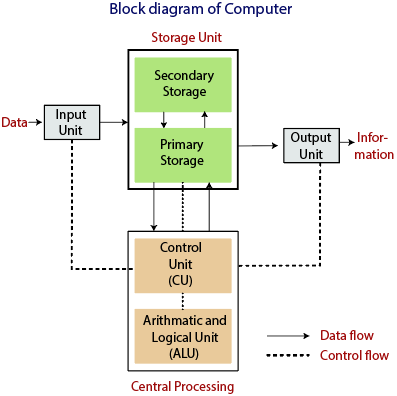

Give short answers to the following questions.
1) What is a Computer?
Ans : Definition 1:
Computer is an electronic device capable of performing computations and making logical decision at a speed of million or even billion of times faster than human beings.
Definition 2:
Computer is a machine that accepts input, processes it and produces output.
2) What is processing operation?
Ans : The process of performing different operations on existing data is called processing operation. e.g. when computer performs addition of two numbers it is called processing.
The Central Processing Unit performs processing tasks.
3) Show basic operations of a computer with the help of a block diagram.
Ans : Block diagram of computer

4) What is a notebook computer?
Ans : A notebook computer generally smaller than a briefcase and conveniently used in airplanes, cars, temporary offices, and at meetings. Notebook computers
are especially designed for mobile computing, wireless communication and Internet access.
5) State five differences between hardware and software.
Ans :
| Hardware | Software | |
| 1 | Hardware is physical components of the computer used for processing of data. | Software is set of instructions that tell computer what to do. |
| 2 |
Hardware is replaced if problem is not solved. |
Software is reinstalled if the problem is not solved. |
| 3 | Finding and removing errors in hardware is called Troubleshooting. | Finding and removing errors in software is called Debugging. |
| 4 | Hardware types are input, storage, processing, output etc. | Software types are System software and Application software. |
| 5 |
Examples of hardware: CD-ROM , monitor , printer , video card , scanners , label makers , routers and modems. |
Examples of software: Adobe Acrobat , Internet Explorer , Microsoft Word , Microsoft Excel. |
6) Differentiate between an Interpreter and a Compiler.
Ans :
| Interpreter | Compiler | |
| 1 | It translates the statements of the source code one by one and execute immediately. | It translates a program into machine code as a whole. |
| 2 | Program execution is slow. | Program execution is fast. |
| 3 | It does not create object code file. | It creates object code file. |
| 4 | Translator program is required to translate the program each time user wants to run the program. | Translator program is not required to translate the program each time user wants to run the program |
| 5 | Programming language like BASIC, PHP use interpreters. | Programming language like C, C++ use compilers |
7) How Application Software help users?
Ans : Application software is used in a variety of fields in daily life. Some of the fields in which application software is mostly used are given below:
a) In Offices:
In many offices, application software is used for word processing instead of using typewriters.
b) In Banks:
Banks keep most of their record and data in database and other application software like MS Word and MS Excel, through which fast services are provided to the customers.
c) In Business:
Today commercial business cannot be run without the use of application software. Different offices can communicate with each other through latest application software.
d) In Education:
Application software is playing a very important role in the education.
It is being used in schools, colleges and universities for education purposes.
8) Differentiate between shareware and freeware.
Ans :
| Freeware | Shareware | |
| 1 | Freeware refers to software that anyone can download from the Internet and use for free. | Sharewares give users chance to try the software before buying it. |
| 2 | All the features are free and available for use. |
Most of the times, all features are not available, or have limited use. To use all the features of the software, user has to purchase the software. |
| 3 | Freeware programs can be distributed free of cost. |
Shareware may or may not be distributed freely. |
| 4 |
Examples of freeware software : Adobe PDF , Google Talk , Yahoo messenger ,MSN messenger |
Examples of shareware software : Winzip , Cuteftp , Getright |
9) What is Licensed Software?
Ans : A licensed software means giving rights to use the software under certain conditions but restricted from other uses such as modification, further copying and distribution etc. under legal right of the copyright holder.
Licensed software includes MS Windows, Adobe Photoshop, Skype, MS Office etc.
10) What is firmware?
Ans : Firmware is small program that is stored on Answer computer or other hardware device that provides instruction on that device should operate. Unlike normal software, firmware be changed or deleted by user without special programs. Examples of devices containing firmware are: ROM , Cell phones , Digital Cameras etc.
Q) Differentiate between Soft copy output and Hard copy output.
Ans :
| Soft Copy | Hard Copy | |
| 1 | Soft Copy is the output which is stored in a memory and displayed on the screen | Hard Copy is an output which is printed on a paper |
| 2 | It is easy to make changes and correction | It is difficult to make changes and correction |
| 3 | To read out soft copy output, an electronic device is required | To read out hard copy output, no electronic device is required |
| 4 | It is non physical and cannot be touched |
It is physical and can be touched |
| 5 | It can be transmitted electronically | It can be transmitted physically |